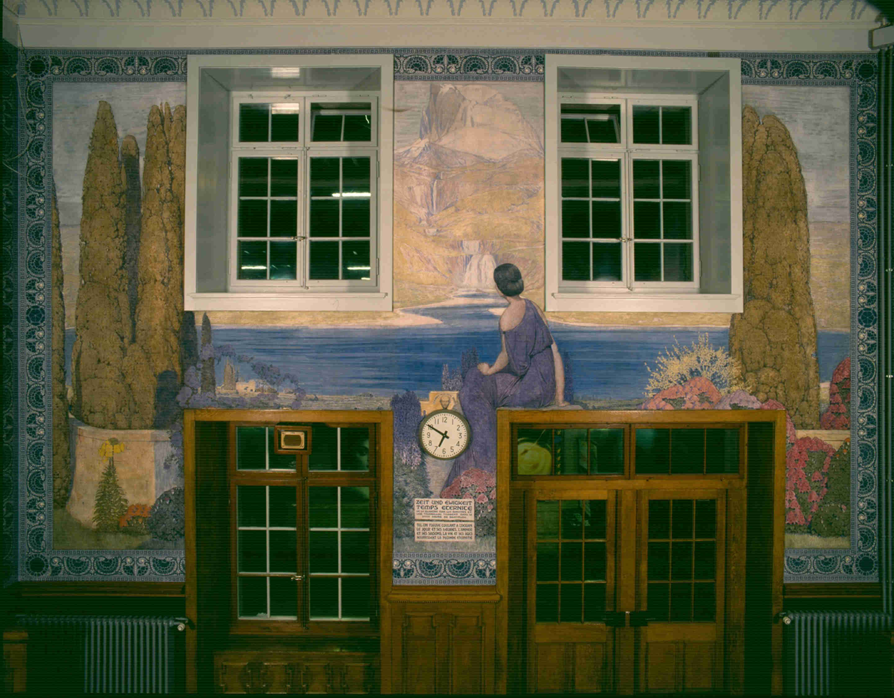

David Plüss zum 60. Geburtstag
«Je ne connais pas vos petites minutes» (Philippe Robert)
Heure bleue im Bieler Wartesaal
Im Bahnhof Biel eine Hintertür nehmen, in Nähe der Bahnhofshalle. In einen quadratischen, nicht sehr grossen, hohen Raum schlüpfen. Ein separates Zimmer inmitten des Bahnhofstrubels, wo das gedämpfte Licht über das Presslufthammergeschrei vor dem Fenster hinwegtröstet. Ein Geschäftsmann mit Knopf im Ohr tigert auf und ab und spricht dabei vom Zusatznutzen in Millionenhöhe. Ein Bier trinkender Passant raunt, es handle sich um ein Gesamtkunstwerk, «un ensemble – vous savez?» mit vier grossformatigen Fresken. Elegant geschnitzte Holzbänke erinnern an einen Kirchenraum. Eine Kapelle des Wartens mit Ausblick ins Meerblau, Himmelblau, in lila Landschaften, wie sie bloss die blaue Stunde kennt. Titel und die Jahreszahl 1923, manchmal ein Sinnspruch über den Lauf der Zeit, direkt ins Wandbild gemalt. An der Nordwand des Raums: «Der Stundentanz / La Ronde des Heures, 1923». Die Westwand zieren «Die Lebensstufen / Les Âges de l`Homme». Gegenüber an der Ostwand liegen: «Die Jahreszeiten / Les Saisons». Während auf der Südwand «Zeit und Ewigkeit / Temps - Étérnité» unter einer Bahnhofsuhr in die Ferne fliessen. Die Bahnhofsuhr hat keinen Sekundenzeiger.
Philippe Robert, «Zeit und Ewigkeit / Temps – Éternité», 1923, Wandbild Südwand, Wartesaal Bahnof Biel/Bienne. (Foto: Alain D. Boillat, © SBB Historic)
Garten Eden in der Zukunftsstadt
1923 wurde er eingeweiht: Der neue Bieler Bahnhof samt seinem Wartesaal. Der Mittelteil des Bahnhofs beschwört einen griechischen Tempel mit dorischen Säulen herauf. Ein starker Kontrast zum Bahnhofsquartier, ganz im Stil des Neuen Bauens. Das moderne Bahnhofsquartier schaut vorwärts in eine neue Zeit, während der Bahnhof selbst Halt und Beständigkeit sucht. Der Wartesaal seinerseits träumt sich zurück und vor in den Garten Eden. Sein Gestalter ist der Maler Philippe Robert (1881–1930). Robert gewann einen Wettbewerb zur Gestaltung eines Wandbildes im Wartesaal. Rastlos malte Robert in weniger als einem halben Jahr nicht nur ein Wandbild, sondern gestaltete den Raum mit vier riesigen Fresken. Er bannte die Vergänglichkeit auf alle vier Wände. Dabei geriet er in einen Streit mit seiner Auftraggeberin, der Eidgenossenschaft, um die Entlöhnung. Beinahe hätte er den Pinsel hingeworfen. Er tat es nicht. Heute ist das denkmalgeschützte Ensemble im Bieler Wartesaal ein Ort der Stille mit ein und demselben Thema: Dem Lauf der Zeit und den Menschen darin, die sind wie die Nachtkerze und Blumen auf Roberts Fresken, die kurz aufflackern, um tags drauf zu verlöschen.
Die Malerfamilie Robert als erste Ökotheologen
Philippe Robert wird in ein religiöses Milieu und in eine Malerfamilie
hineingeboren. Hin- und hergerissen zwischen Theologie und Malerei,
studiert er zuerst einige Semester in Genf, Lausanne und Berlin
Theologie. 1905 bricht er das Studium ab und widmet sich ganz der
Malerei. Viele seiner grossformatigen Werke sind religiös motiviert. Die
Glasfenster in der französischen Kirche Bern oder in den Dorfkirchen von
Vully-Môtier (FR), Chaindon (BE), Corcelles (NE) und Les Ponts-de-Martel
(NE) zeugen davon.
Man könnte die ganze Malerfamilie Robert als erste Ökotheologen
bezeichnen. Die Pflanzen und Blumen, Vögel und welkenden Herbstblätter
des Wohn- und Rückzugsortes im Jorat bei Orvin, hinter Biel, bilden den
Kosmos, aus dem die Roberts schöpfen. Ihre Schöpfungsfrömmigkeit, das
Staunen und die Ehrfurcht vor Mauersegler und Wolken sind den Bildern
eingezeichnet. In protestantischen Familien der Westschweiz findet sich
manchmal noch eine Traubibel mit Illustrationen von Philippe Robert.
Auch darin verbindet sich das Kleinste mit dem Grössten. Das
Gänseblümchen mit der Schöpfungskraft.
Philippe Robert, «Der Stundentanz / La Ronde des Heures», 1923 Wandbild Nordwand, Wartesaal Bahnof Biel/Bienne, (Foto Alain: D. Boillat, © SBB Historic)
La Ronde des Heures – der Stundentanz
Im Bieler Wartesaal tanzen 24 weibliche Stundenfiguren ihren Reigen. Der Kreislauf von Werden und Vergehen, der die nächtlichen Figuren ihr Gesicht verhüllen lässt, Kreuz oder Sense in der Hand, erinnert an die Frömmigkeit von Schöpfungspsalmen. Die Frauenfiguren tanzen nach Roberts berühmtem Vorbild Ferdinand Hodler (1853–1918). Und drehen sich wie die reformbewegten Tänzer:innen auf dem Monte Verità zu Beginn des 20. Jahrhunderts. In der Mitte tanzt «filia lucis», die Tochter des Lichts, leicht bekleidet in weissem Gewand. Links und rechts die Schwestern ein und elf Uhr in hellem Gelb. Im Verlauf des Tages werden die Kleider länger, die Farben dunkler, wechseln ins Orange und Türkis, verblauen ab sechs Uhr. Eine Obstschale wird zum Abendbrot gereicht. Sieben Uhr spielt erhobenen Hauptes Flöte, während ab acht die Köpfe sich neigen und dunkle Kapuzen das Gesicht verhüllen. Mitternacht wird gehalten von einer gekrönten, tröstlichen Figur: ein Uhr. Zwei Uhr schultert eine Sense. Die ersten Stunden der Nacht sind die schwersten, für die, die wachliegt. Der Tod scheint nahe und ein Hoffnungsanker, den die fünfte Stunde in ihrer Hand hält, fern. Sieben Uhr streckt und reckt sich. Acht Uhr nimmt einen grossen Schritt auf eine Dreiergruppe Frauen zu, die in warmen Farben wieder Richtung Mittag tanzen. Zu Füssen liegen ihr vier leuchtende Blumenkränze. Unter den nackten Zehen blühen die kleinen Margeriten am üppigsten. Wie sehr Philippe Robert diese unscheinbare Blume liebte: Gänseblümchen, Massliebchen, Tausendschön, helvetisch: Margritli. Ein sehr unscheinbares, widerständiges Gewächs. In seinem Garten Eden, dem Jorat, nahe dem Dorf Orvin, widmete sich Philippe Robert Naturstudien. Sein Wissen und seine Liebe zur Schöpfung waren gross. Vollmundig besingt er denn auch im Halbdunkel des Bieler Wartesaals ewige Themen wie den Kreislauf aus Leben und Tod. Leiser gibt er seiner Lieblingsblume, dem Gänseblümchen, seinen Platz. Ist es der Künstler selbst, der mit geschlossenen Augen im Bild «Zeit und Ewigkeit» flüstert «Je ne connais pas vos petites minutes» – Eure kleinen Minuten kenne ich nicht?
Martina Schwarz ist Pfarrerin und leitet bei der KOPTA an der Theologischen Fakultät Bern das Praktische Semester.
Weitere Artikel von {{ author.author }} finden Sie hier:
Zur Vertiefung:
- Fülscher, Bernadette: Der Wartesaal: Literarisches Porträt, Biel 2023.
- Schäfer, Otto: Die Maler Robert als Vorläufer heutiger Ökotheologie, Biel 2008.
- Bernadette Walter: Grand Art: Oevres murales de Karl Walser et Philippe Robert, Biel 2013.
- Neues Museum Biel NMB, verfügbar unter: www.nmbiel.ch (25.6.2024). (Mit grossem Dank an Caroline Baier, wissenschaftliche Mitarbeiterin Kunst/Sammlung Robert).
- Verein Haus Robert im Jorat, verfügbar unter: www.maisonrobert.ch (25.6.2024).